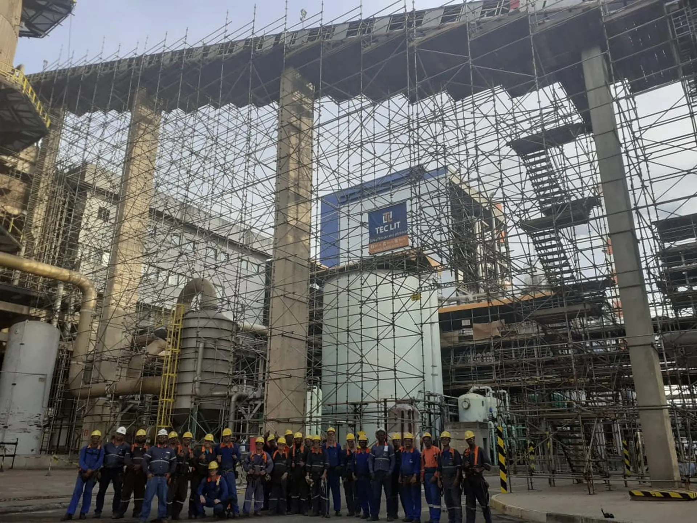

Conteúdo técnico
Andaime explicado por quem monta
Textos escritos para engenheiro, técnico de segurança e comprador que precisam decidir alguma coisa: quanto material a obra vai consumir, qual sistema usa menos hora de equipe, o que a norma cobra e o que verificar antes de liberar a estrutura para uso.

Como usar
Oito artigos, três trilhas de leitura
Cada artigo responde a uma pergunta que aparece em obra, com a resposta direta nos dois primeiros parágrafos e o detalhamento depois. Não há preço, nem prazo em número: valor e prazo dependem da obra e saem no orçamento.
Antes de contratar
Como montar a conta, medir a obra e escolher o sistema certo para a frente de serviço.
-
Quanto custa alugar andaime e o que entra no orçamento
Locação de andaime não tem preço de tabela. O valor não é do equipamento isolado, é do conjunto: a quantidade de material que fica na obra, o tempo que ele fica lá, o transporte até o local, e a montagem e desmontagem, quando entram no contrato.
-
Como calcular quantos metros de andaime a obra precisa
A estimativa começa pela área da frente de serviço: comprimento vezes altura, em metro quadrado. Essa área é convertida em módulos do sistema escolhido, e cada módulo tem uma quantidade fixa de montante, travessa, diagonal, piso e sapata.
-
Andaime multidirecional ou fachadeiro: qual usar em cada obra
A escolha é decidida pela geometria da frente de serviço. Parede reta, longa e sem interferência é território do andaime fachadeiro: ele é modular, monta rápido e usa poucas peças diferentes.
-
Alugar ou comprar andaime: quando cada opção compensa
A decisão depende de duas variáveis: com que frequência a empresa precisa de acesso e por quanto tempo o material fica parado em cada obra. Quem usa andaime de forma pontual, em obra com começo e fim, aluga.
Norma e segurança
O que a NR 18 e a NR 35 exigem do andaime, de quem monta e de quem libera para uso.
-
NR 18 na montagem de andaime: o que a fiscalização cobra
A NR 18 trata da segurança na indústria da construção e é a norma que rege o andaime em obra. Os pontos que a fiscalização verifica com mais frequência são objetivos: quem dimensionou a estrutura e a sua sustentação, se o piso de trabalho está completo e fixado, se existe guarda-corpo com travessão intermediário e rodapé, se o andaime está travado e amarrado, se o acesso ao nível de trabalho é seguro, e se a área abaixo está isolada e sinalizada..
-
NR 35 e trabalho em altura: quem pode montar andaime
A NR 35 trata do trabalho em altura e se aplica a toda atividade executada acima de dois metros do nível inferior, quando existe risco de queda. Montagem, desmontagem e alteração de andaime estão dentro desse escopo.
-
Checklist de inspeção antes de liberar o andaime para uso
Andaime montado não é andaime liberado. Entre uma coisa e outra existe uma verificação item a item, feita por pessoa designada, que confirma se a estrutura está como foi dimensionada e se as proteções estão completas.
Obra industrial
Planejamento de acesso em planta parada, onde o andaime está no caminho crítico.
-
Parada de manutenção industrial: como planejar o andaime
Em parada de manutenção, o andaime é a primeira coisa a entrar e a última a sair. Ele não é uma atividade paralela: ele está no caminho crítico, porque caldeiraria, solda, inspeção, isolamento e pintura só começam depois que o acesso está liberado.
Veja também
Das dúvidas para as páginas de serviço
Se a decisão já está tomada, o caminho mais curto é a página do serviço.
Orçamento
Da leitura para o orçamento
Informe a cidade, a altura, o tipo de serviço e a data prevista. Se já tiver a lista de material, o retorno sai mais rápido.